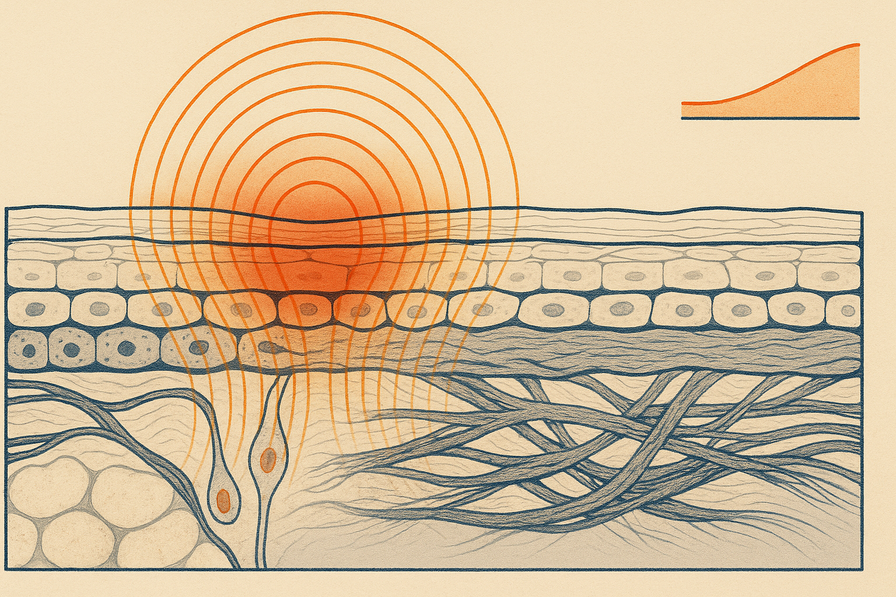
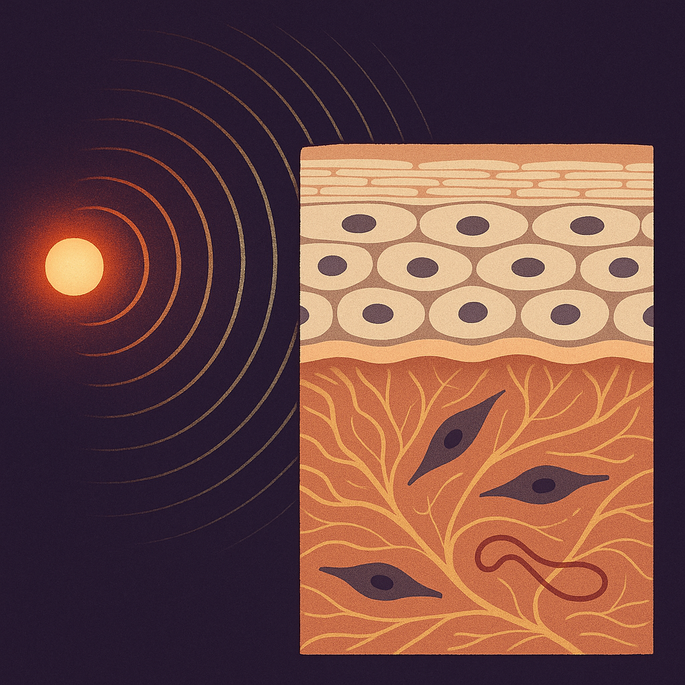
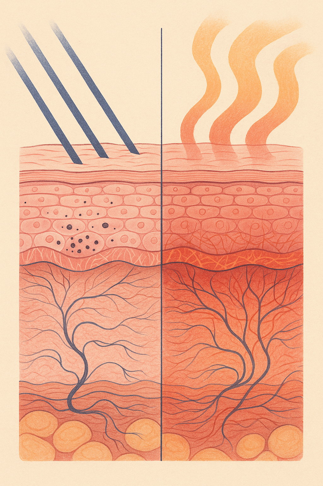

Review below. Reply approve to publish the Facebook post, or tell me edits.

Your skin counts the hot shower.
The car has been parked in the open since nine in the morning. You open the door at four and a wall of heat comes out to meet you. The steering wheel is untouchable, the seatbelt buckle is too hot to hold, and the air on your face feels thick.
We file that under discomfort. Your skin files it under something else: a signal.
Australians are, on the whole, excellent at one half of this. Sunscreen, hats, shade, the UV index on the weather app. Sun protection is close to a national reflex.
Temperature gets none of that attention. Yet the research literature on what is often called thermal ageing (or IR-A ageing, for the near-infrared part of the spectrum) has been building since the mid 2000s, and it points in an uncomfortable direction.
Here is the mechanism, named and then translated. Infrared radiation and plain conducted heat both raise the temperature of the skin. Laboratory and small human studies published in dermatology journals from roughly 2006 onward report that heat-exposed skin shows increased expression of matrix metalloproteinases, the enzymes whose job is to break down the collagen and elastin already sitting in your dermis. In plain English: heat does not appear to burn collagen away. It appears to speed up the demolition crew that was already on site.
Two honest caveats, because they matter. Most of this work is laboratory or small-study evidence, not large population trials. And the effect is cumulative and slow, not dramatic. Nobody gets a wrinkle from one hot shower. This is a question of decades of daily load, which is exactly why it is worth understanding early.
Not by the same route. UV damage is chiefly a DNA and pigment story. It has a public dose measure (the UV index), a visible receipt (tan, freckling, burn) and a feedback loop that stings by the evening if you got it wrong.
Heat has none of that. No index. No tan. No sting the next morning. Broadly the same direction of travel for the collagen scaffold, zero feedback signal.
That absence of feedback is the whole problem. We regulate what we can perceive. A shower hot enough to fog the room feels like a reward, not a dose.
Run through a normal Tuesday and count the exposures.
The car cabin. Vehicle-safety research on cars parked in summer sun has recorded cabin temperatures well above 50 degrees, and dashboard surfaces hotter again. You climb in and sit in radiant heat until the aircon catches up.
The July shower. Winter is when shower temperature quietly creeps up, and it is also when the skin barrier is already under pressure from dry, heated indoor air.
The oven door. Opening a fan-forced oven at 200 degrees delivers a short, intense blast straight to the face at roughly head height.
The radiant heater. This is the sleeper. An hour a night on the couch, one metre from a glowing element, five months of the year.
The windscreen. Long drives mean sustained one-sided exposure on the driver's cheek and forearm. Laminated windscreen glass is generally reported to block most UVB and a good share of UVA, but it does not stop infrared warmth.
Dermatology has a textbook name for the pattern that shows up after prolonged, repeated radiant heat on one area: erythema ab igne, a mottled discolouration long described in people who sat close to fires and heaters for years. It is uncommon, and it is not the point here. The point is that it demonstrates that skin registers sustained warmth as an exposure, not just a sensation.
If your skin is reactive or flushing-prone, none of this is news to your face. Heat is one of the best-documented triggers for visible redness, and the sources are the same ordinary ones: hot showers, hot drinks, heaters, ovens, a car cabin in February.
The mechanism there is vascular rather than enzymatic, so it is a different story to the collagen one. But it arrives in minutes rather than decades, which makes it a useful early-warning system. If a hot shower leaves you pink for twenty minutes, that is a legible signal about your daily thermal load.
None of these require giving up comfort. That is deliberate, because a change you abandon in a fortnight lowers nothing.
Skin longevity is not one decision. It is the sum of several inputs running in parallel: ultraviolet, mechanical (rubbing, pulling, sleep creases), thermal, plus sleep and general recovery. Lower the total load and the maintenance work your skin does each night has less to undo.
That is also the honest frame for red light therapy at home. It sits at the low-energy, low-heat end of the light spectrum, which is precisely why sessions are measured in minutes and why they should never feel like warmth on the face. It is a cosmetic device, not medicine.
Which of these five is already in your routine, and which one would you actually keep?

We all know about the sun. Almost nobody counts the shower.
UV gets an index and a daily forecast. Heat gets nothing. Yet a car left in the sun all morning, a shower hot enough to fog the room in July and a radiant heater aimed at the couch all lift skin temperature well above where it normally sits. Lab work on thermal ageing suggests sustained heat nudges the enzymes that break down existing collagen. Slow, quiet, cumulative. No tan, no sting, no feedback to tell you it happened.
The good news: the fix is not dramatic, and you do not have to give up comfort.
Drop the shower a few degrees rather than going cold. Run the aircon before you get in the car, not after. Keep a metre between your face and any heater. Stand to the side of the oven door, not in front of it. That is genuinely it.
One bonus: if your skin flushes easily, heat is a well known trigger for that too, so the same habits pay off twice.
Shower, car or heater, which one is yours? Mine is the shower and I am not proud of it.
For anyone who asks what we actually sell: it is a face and neck LED light therapy mask, a gentle at-home cosmetic device, not medicine. If you ever want a closer look, it is here: https://redermis.com.au/products/red-light-therapy-face-neck-mask
## Hashtags
#skinhealth #skinlongevity #skinscience #australianskincare #redlighttherapy #ledlightmask

1/4 If your face goes pink in the shower, your skin is already reporting something.
Flushing is the fastest read you can get on heat. It arrives in minutes, and it points at an input almost nobody tracks.
2/4 UV gets a daily number, a rating, a whole national campaign. Thermal load gets nothing.
Lab research suggests that raising skin temperature increases the enzymes that break collagen down, cumulatively rather than dramatically. No tan, no sting, no next-day signal to warn you.
3/4 Where it comes from is boringly ordinary. The car cabin at 3pm. The July shower you never want to leave. The oven door. The radiant heater a foot from your shins.
4/4 Four small moves, none of them heroic. Shower a few degrees cooler. Aircon before you sit. A metre back from the heater. Step aside from the oven door.
Skin longevity is load management, not one hero product.
Low-heat light sits in the same load-management category, which is where our mask fits: a gentle daily ritual, and a cosmetic device rather than medicine, so it supports how skin looks and makes no medical promises. Link in bio if you are curious, no rush.
Shower, car or heater, which is yours?
## Hashtags
#skinlongevity #skinhealth #skincarescience #redlighttherapy #ledmask #australianskincare #skinbarrier #reactiveskin #skincaretips #ageingwell #skincareroutine #beautyeditorial
IMAGE PROMPT: Vertical 4:5 editorial science illustration on bone-cream paper with indigo linework, terracotta and muted rose. ONE histologically accurate skin cross-section running full height, split down the middle by a single thin ink rule so only the input differs, tissue identical both sides. Both halves: flattened corneocyte bricks in fine parallel lipid-lamellae mortar, differentiated nucleated living epidermis (basale, spinosum, granulosum) one nucleus per cell, a distinct basement membrane, a dermis of fine banded collagen bundles in a felt-like mat with gold elastin filaments, two slender spindle fibroblasts and one capillary loop, rounded fat lobules at the base. LEFT: three straight oblique violet-blue UV rays entering and stopping in the epidermis, small dark pigment granules capping the basal row. RIGHT: warm ochre convection heat entering as broad even wavy bands with no rays, penetrating far deeper so the dermal collagen mat is tinted ember-red and visibly loosened, bundles separating and elastin fraying. BANS: no trees, branches, roots, canopies or leaf shapes; no neuron-like or dendritic cells; no free-floating organelles or blobs; no product, device, person or face; no text, numbers, labels, tick marks or axes.
## Title
Hot showers and car heat age your skin too
## Description
Heat is the skin input nobody counts. UV gets an index; thermal load gets nothing, and lab research suggests warmth raises the enzymes that break collagen down, slowly and cumulatively.
Everyday heat sources:
1. Long hot showers
2. A car parked in summer sun
3. Cooking over a stove or opening a hot oven
4. Sitting close to a radiant heater
5. Sun through the windscreen on a long drive
Four habits that lower the load:
1. Shower warm, not hot
2. Vent the car and run the aircon before you get in
3. Keep a metre between your face and any heater
4. Step to the side of the oven door, then reach in
Skin longevity is load management, not one hero product. Read the full explainer on the blog.
## Hashtags
#SkincareTips #SkinAgeing #SkinLongevity #SkinBarrier #SkincareScience
## CTA
Read the full heat and skin ageing explainer on the Redermis blog. Any at-home light device is a cosmetic device, not a medical treatment.
## Image
Reuses the Instagram image.